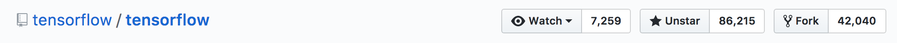
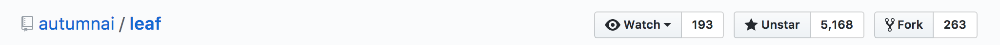
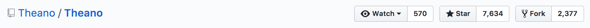
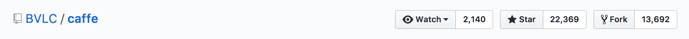
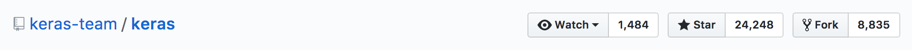
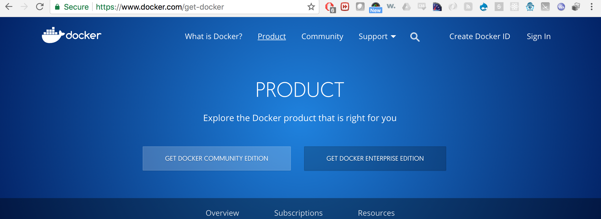

Getting Started With TensorFlow lite:
or how/why you should run TensorFlow models on iOS ( /w CoreML) and Android (tflite)
Presented by Andrew McElroy
Audience guage Who has heard of Tensorflow?
Knows what Deep Learning is?
Mobile Developer? iOS, Android, ReactNative, Other Mobile JS Native devs?
Goals of this talk:
-
Change how you approach a ML Pipeline across cloud and device. Devices are powerful now.
-
Actually get you started with a full dev environment using Docker containers
Background on what Tensorflow is....
Popularity of various ML Frameworks





FlatBuffers vs Protocol Buffers
Hopefully You have Docker setup?

Let's do so now if you don't.